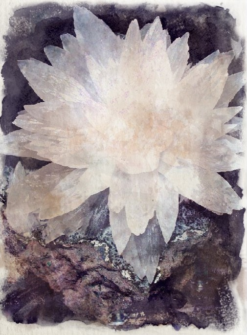

Riverspar
A volcanic mineral formed by magma, it is translucent but with a variety of hue colours due to imperfections. It can be highly valued for artisan uses but also lowers the needed temperature for smelting ores.